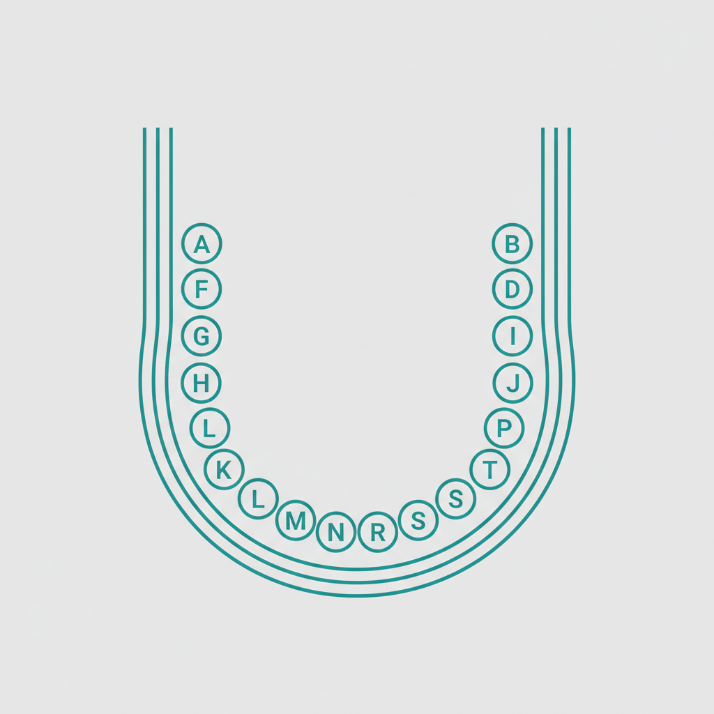
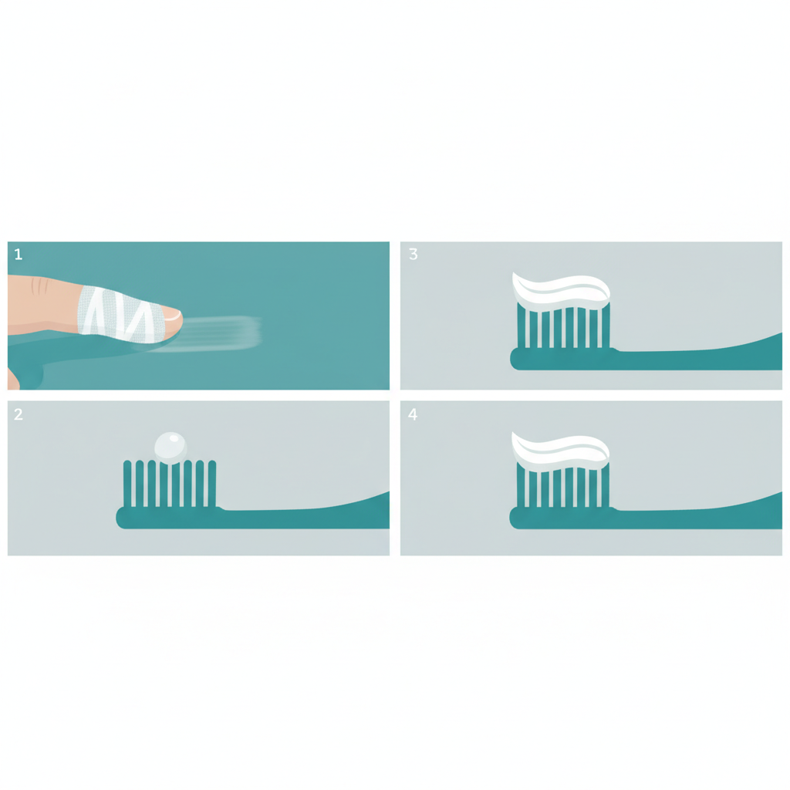

아이 치과 시기부터 어린이 치과 검진 항목, 유치 관리, 건강보험 혜택까지 총정리
아이의 잇몸 사이로 하얀 점 하나가 비치기 시작하면, 기쁨과 동시에 걱정이 밀려옵니다. "치과는 언제 처음 데려가야 하지?" "이렇게 어린데 진료가 가능하기는 할까?" "혹시 아이가 너무 울면 어떡하지?" 첫 아이를 키우는 부모라면 한 번쯤은 반드시 해보셨을 질문입니다.
소아치과 첫 방문은 아프거나 문제가 생긴 뒤에 가는 것이 아닙니다. 유치가 나오기 시작한 아이의 구강 상태를 확인하고, 충치와 부정교합 같은 문제를 조기에 발견하여 예방하는 과정입니다. 문제가 생기기 전에 미리 점검하는 것이 핵심입니다.
그런데 많은 부모가 아이 치과 시기를 놓치거나, 어린이 치과 검진을 만 3세 이후로 미루는 경향이 있습니다. 대한소아치과학회에 따르면, 소아 충치 환자의 약 40%가 만 3세 이전에 이미 충치가 시작된 상태에서 첫 방문을 합니다. 첫 유치가 나온 직후부터 정기적인 관리를 시작하면, 이러한 상황을 충분히 예방할 수 있습니다.
이 글에서는 소아치과 첫 방문의 적정 시기, 검진 항목, 아이의 치과 공포를 줄이는 실질적인 방법, 유치 관리의 중요성, 그리고 부모가 반드시 알아두어야 할 건강보험 혜택까지 빠짐없이 정리했습니다.
대한소아치과학회와 미국소아치과학회(AAPD)는 모두 첫 유치가 나온 후 6개월 이내, 또는 만 1세 이전을 아이 치과 시기로 권장하고 있습니다. 대부분의 아이는 생후 6~8개월에 아래 앞니가 처음 나오므로, 돌 전후가 적정 시기에 해당합니다.
너무 이르다고 느끼실 수 있습니다. 그러나 이 시기의 소아치과 첫 방문은 치료가 아니라 예방이 목적입니다. 유치가 나오기 시작하면 충치 위험도 함께 시작되기 때문입니다. 특히 밤중 수유를 하는 아이의 경우, 젖병을 물고 잠드는 습관이 반복되면 앞니 표면에 충치가 급속하게 진행될 수 있습니다. 이를 우유병 충치(nursing bottle caries)라고 합니다.
우유병 충치는 윗앞니 4개에 집중적으로 발생하며, 초기에는 치아 표면이 백탁(하얗게 변색)되는 형태로 나타납니다. 이 단계에서 발견하면 불소 도포와 식습관 교정만으로 진행을 막을 수 있지만, 방치하면 치아가 갈색 또는 검은색으로 변하며 심한 경우 치아 전체가 무너지기도 합니다.
세계보건기구(WHO)와 영국 왕립치과학회(Royal College of Surgeons)도 유치 맹출 직후 첫 치과 방문을 권장하고 있으며, 이는 전 세계적으로 공통된 가이드라인입니다.

유치는 총 20개이며, 생후 6개월경부터 만 2.5~3세 사이에 모두 맹출합니다. 아래 표는 평균적인 맹출 시기를 정리한 것입니다. 개인차가 있으므로 표와 1~3개월 정도 차이가 나는 것은 정상 범위에 해당합니다.
| 맹출 시기 | 맹출 치아 | 개수 | 누적 |
|---|---|---|---|
| 6~8개월 | 아래 앞니 (하악 유중절치) | 2개 | 2개 |
| 8~12개월 | 위 앞니 (상악 유중절치) | 2개 | 4개 |
| 9~13개월 | 위 옆 앞니 (상악 유측절치) | 2개 | 6개 |
| 10~16개월 | 아래 옆 앞니 (하악 유측절치) | 2개 | 8개 |
| 13~19개월 | 첫째 어금니 (유제1대구치) | 4개 | 12개 |
| 16~23개월 | 송곳니 (유견치) | 4개 | 16개 |
| 23~33개월 | 둘째 어금니 (유제2대구치) | 4개 | 20개 |
| 만 2.5~3세경 유치 20개가 모두 완성됩니다 | |||
다만, 만 13개월이 지나도 유치가 하나도 나오지 않는 경우에는 소아치과에서 확인이 필요합니다. 드물지만 선천적으로 치아 개수가 부족하거나(선천 결손), 잇몸뼈 내부에 치아가 매복되어 있는 경우가 있기 때문입니다.
어린이 치과 검진은 대부분 15~20분 이내로 끝나며, 통증을 수반하는 시술은 거의 없습니다. 아이가 부담을 느끼지 않도록 짧고 부드럽게 진행되기 때문에, 첫 방문을 너무 걱정하실 필요는 없습니다.
| 검진 항목 | 내용 | 비고 |
|---|---|---|
| 시진 검사 | 유치 개수, 배열, 충치 유무를 육안으로 확인 | 잇몸, 혀, 입천장, 구강 점막까지 포함 |
| 교합 확인 | 윗니와 아랫니의 물림 상태 점검 | 부정교합, 반대교합 조기 발견 |
| 불소 도포 | 치아 표면에 불소를 발라 법랑질 강화 | 유치 4개 이상 시, 건보 연 2회 적용 |
| 구강 위생 상담 | 월령에 맞는 양치법, 식습관, 불소 치약 사용법 안내 | 보호자 대상 1:1 설명 |
| 방사선 촬영 | 치아 내부 상태, 영구치 배아 위치 확인 | 만 3세 이후, 필요시에만 시행 |
시진 검사는 가장 기본적인 과정입니다. 의사가 손거울과 탐침을 이용하여 유치의 상태를 살피고, 잇몸 색깔과 형태, 혀의 운동 범위(설소대 단축 여부), 구강 점막의 이상 유무까지 함께 확인합니다. 만 1세 전후의 아이는 부모 무릎 위에 눕힌 상태에서 검진하는 '무릎 대 무릎(knee-to-knee)' 방식으로 진행하는 경우가 많습니다.
교합 확인은 윗니와 아랫니가 올바르게 맞물리는지를 점검하는 과정입니다. 유치열에서 반대교합(아래 이가 위 이를 덮는 상태)이 발견되면, 영구치 교환기 이전에 교정적 개입을 고려할 수 있습니다. 유치기에 발견하면 간단한 장치로 교정이 가능하지만, 영구치가 나온 뒤에는 치료가 복잡해질 수 있습니다.
불소 도포는 유치 표면의 법랑질을 강화하여 충치균의 산(acid) 공격에 대한 저항력을 높이는 시술입니다. 시술 시간은 약 1~2분이며, 통증이 전혀 없습니다. 도포 후 30분간 음식물 섭취를 삼가면 효과가 극대화됩니다.
구강 위생 상담에서는 현재 아이의 월령에 맞는 칫솔 종류, 양치 방법, 불소 치약의 적정 사용량, 충치를 유발하는 식습관에 대해 구체적으로 안내합니다. 부모가 가정에서 실천할 수 있는 맞춤형 가이드를 받을 수 있는 기회이므로, 궁금한 점을 미리 메모해 가시는 것을 권합니다.
치과 공포(dental anxiety)는 어른에게도 흔하지만, 아이에게는 훨씬 강렬하게 느껴집니다. 낯선 환경, 기계 소리, 낯선 사람이 입 안을 만지는 상황은 어린아이에게 충분히 위협적으로 느껴질 수 있습니다. 연구에 따르면, 어린 시절 치과에서 부정적 경험을 한 사람의 약 60%가 성인이 되어서도 치과 방문을 회피하는 경향을 보입니다.
아이의 치과 공포를 줄이는 4가지 방법
1. 방문 전 -- 긍정적인 프레이밍
"이가 아프면 가는 곳"이 아니라 "이가 튼튼한지 확인하러 가는 곳"으로 이야기해주세요. 치과 방문을 주제로 한 그림책이나 영상을 미리 함께 보는 것도 효과적입니다. 반대로 "안 아프니까 걱정 마" 같은 표현은 오히려 불안을 심어줄 수 있으므로 피하는 것이 좋습니다.
2. 방문 당일 -- 컨디션이 좋은 시간대 선택
아이가 배고프거나 졸린 시간대는 예약을 피해주세요. 낮잠 시간과 겹치지 않는 오전 10~11시가 가장 적합한 시간대입니다. 예약 시간보다 10~15분 일찍 도착하여 대기실 환경에 적응할 시간을 주는 것도 도움이 됩니다.
3. 진료 중 -- 부모의 태도가 핵심
만 3세 이전의 아이는 부모 무릎에 앉혀서 검진하는 경우가 많습니다. 이때 부모가 긴장하면 아이도 즉각적으로 불안을 느낍니다. "울면 안 돼"보다는 "잘하고 있어", "거의 다 끝났어" 같은 격려가 훨씬 효과적입니다.
4. 진료 후 -- 긍정적 강화
"치과에 갔다 왔으니 정말 대단하다"는 식의 긍정적 연결고리를 만들어주세요. "입을 잘 벌리고 있어서 대단했어"처럼 행동을 짚어서 칭찬하면, 다음 방문에서도 같은 행동을 하려는 동기가 생깁니다. 치과 다녀온 보상으로 사탕이나 과자 대신 스티커나 색칠 공부를 고려해보시기 바랍니다.
"어차피 빠질 이인데 충치 치료를 꼭 해야 하나요?" 소아치과에서 가장 많이 듣는 질문 중 하나입니다. 결론부터 말씀드리면, 유치 충치도 반드시 치료해야 합니다. 유치는 단순히 빠질 이가 아니라, 영구치가 제대로 자리 잡을 수 있도록 안내하는 가이드 역할을 하기 때문입니다.
첫째, 영구치 공간 확보. 유치가 충치로 일찍 빠지면, 양옆 치아가 빈 공간 쪽으로 기울어집니다. 그 결과 나중에 영구치가 나올 공간이 부족해지고, 치아가 삐뚤어지거나 겹쳐서 나오게 됩니다. 유치 하나를 일찍 잃어버린 것이 이후 교정 치료의 원인이 되는 사례는 임상에서 드물지 않습니다.
둘째, 충치균 전파. 유치에 충치가 있으면, 충치를 일으키는 뮤탄스균(Streptococcus mutans)이 구강 내에서 활발하게 증식합니다. 아직 법랑질이 완전히 성숙하지 않은 새 영구치가 높은 농도의 충치균에 바로 노출됩니다. 유치 충치를 방치한 아이의 영구치 충치 발생률이 그렇지 않은 아이보다 2~3배 높다는 연구 결과가 이를 뒷받침합니다.
셋째, 저작 기능과 발음. 유치는 아이가 음식을 씹는 데 직접적인 역할을 합니다. 유치 충치로 인해 한쪽으로만 씹는 습관이 생기면 턱뼈의 비대칭 발달로 이어질 수 있습니다. 또한 앞니가 심하게 손상되면 발음(특히 'ㅅ', 'ㅈ' 계열)에 영향을 미쳐, 언어 발달 시기에 있는 아이에게 또 다른 문제를 만들 수 있습니다.
월령별 양치 관리 가이드
유치 맹출 시작 시 (6~12개월)
깨끗한 거즈나 실리콘 핑거 칫솔로 유치와 잇몸을 가볍게 닦아줍니다. 수유 후와 취침 전에 실시하는 것이 중요합니다. 이 시기에는 치약 없이 물만으로 닦아도 충분합니다.
만 2세부터
쌀알 크기(약 1mm)의 불소 치약을 사용할 수 있습니다. 아이 스스로 칫솔질하는 습관을 만들되, 반드시 부모가 마무리 양치를 해주어야 합니다.
만 3~6세
불소 치약 사용량을 완두콩 크기(약 5mm)로 늘릴 수 있습니다. 이 시기에도 부모의 마무리 양치는 필수입니다. 특히 어금니 안쪽 면과 씹는 면은 아이가 스스로 닦기 어려운 부위입니다.
만 6세 이후
첫 번째 영구치 어금니(6세 구치)가 나오는 시기입니다. 유치 맨 뒤쪽에서 나오기 때문에 부모도 모르게 지나치는 경우가 많습니다. 이 치아는 평생 사용할 어금니이므로, 맹출 즉시 실란트(치아 홈 메우기)를 받는 것이 권장됩니다.

소아치과 첫 방문 이후에는 3~6개월 간격으로 정기적인 어린이 치과 검진을 받는 것이 일반적입니다. 충치 위험이 높은 아이(우유병 수유 중, 간식 빈도 높음, 이전 충치 이력 있음)는 3개월 간격, 구강 상태가 양호한 아이는 6개월 간격이 적합합니다.
정기 검진에서는 새로운 충치 여부, 유치 탈락과 영구치 맹출 상태, 교합 변화, 구강 위생 상태를 종합적으로 확인합니다. 아이의 성장에 따라 구강 환경이 빠르게 변하기 때문에, 성인보다 짧은 주기의 검진이 필요합니다.
부모가 알아두어야 할 건강보험 혜택 3가지
불소 도포
만 5세 이상~만 18세 미만 아동을 대상으로, 연 2회 건강보험이 적용됩니다. 본인부담금이 매우 적으며, 충치 예방 효과가 약 30~40%에 달합니다.
치아 홈 메우기 (실란트)
만 18세 미만의 영구치 어금니(제1대구치, 제2대구치)를 대상으로 건강보험이 적용됩니다. 특히 만 6세 전후에 나오는 첫 번째 영구치 어금니(6세 구치)는 평생 사용해야 하는 치아이므로, 맹출 후 가능한 빨리 실란트를 받는 것이 좋습니다. 실란트의 충치 예방 효과는 약 60~80%로 보고되고 있습니다.
영유아 구강검진
국민건강보험공단에서 제공하는 무료 검진 프로그램입니다. 생후 18~29개월, 생후 30~41개월, 생후 42~53개월, 생후 54~65개월 총 4차에 걸쳐 무료로 구강검진을 받을 수 있습니다. 검진 기간이 지나면 혜택이 소멸되므로, 안내문을 수령하셨다면 가급적 빠른 시일 내에 예약하시기 바랍니다.
Q. 돌 전 아기도 치과에 갈 수 있나요?
네, 가능합니다. 유치가 나오기 시작했다면 첫 방문이 가능합니다. 이 시기에는 치료보다는 구강 상태 확인과 보호자 상담 위주로 진행됩니다. 첫 유치가 나온 후 6개월 이내, 늦어도 만 1세 이전에 방문하시는 것이 국내외 학회의 공통 권장 사항입니다.
Q. 소아치과와 일반 치과, 어떤 차이가 있나요?
소아치과는 치과대학 졸업 후 2~3년의 수련 과정을 거친 전문의가 진료하는 분야입니다. 성장기 아이의 유치와 영구치 교환기 관리, 아이의 행동 조절(behavior management), 소아 진정 마취, 외상 치아 처치 등에 대한 전문 훈련을 받습니다. 특히 만 3세 이전의 첫 방문은 소아치과에서 받는 것이 아이의 치과 적응에 더 유리할 수 있습니다.
Q. 아이가 너무 울어서 검진이 어려운데, 괜찮을까요?
첫 방문에서 우는 것은 매우 자연스러운 반응입니다. 소아치과 의료진은 아이의 불안과 울음을 다루는 데 전문적인 훈련이 되어 있으므로, 울더라도 기본적인 구강 확인은 진행할 수 있습니다. 대부분의 아이는 2~3회 방문 후에는 진료실 환경에 적응하여 훨씬 수월하게 검진을 받게 됩니다.
Q. 불소가 아이에게 안전한가요?
치과에서 사용하는 불소 도포량은 안전 기준 내에서 엄격하게 관리됩니다. 대한소아치과학회, 미국소아치과학회(AAPD), 세계보건기구(WHO) 모두 적정 농도의 불소 사용이 충치 예방에 효과적이며 안전하다는 입장을 일관되게 유지하고 있습니다. 사용량이 극소량이고 도포 후 뱉어내기 때문에 체내 흡수량은 매우 적습니다.
Q. 영유아 구강검진은 어디서, 언제 받나요?
국민건강보험공단에서 지정한 검진 기관(대부분의 치과 의원이 포함)에서 받으실 수 있습니다. 검진 시기가 되면 우편 또는 모바일로 안내문이 발송됩니다. 국민건강보험공단 홈페이지(nhis.or.kr) 또는 건강iN 앱에서 확인하실 수 있습니다. 검진 기간이 지나면 혜택이 소멸되므로, 안내문을 받으시면 가급적 빠른 시일 내에 예약하시기를 권합니다.
용인 동백 유디치과
우리 아이의 첫 치과 경험,
편안하게 시작해보세요
아이의 구강 건강은 어릴 때 형성된 습관에서 시작됩니다.
첫 방문부터 편안한 환경에서 검진받으실 수 있습니다.
031-546-0051 | 평일 09:30~18:30 / 토 09:30~14:30
더 자세한 정보는 홈페이지에서 확인하실 수 있습니다.
https://claude-old.vercel.app